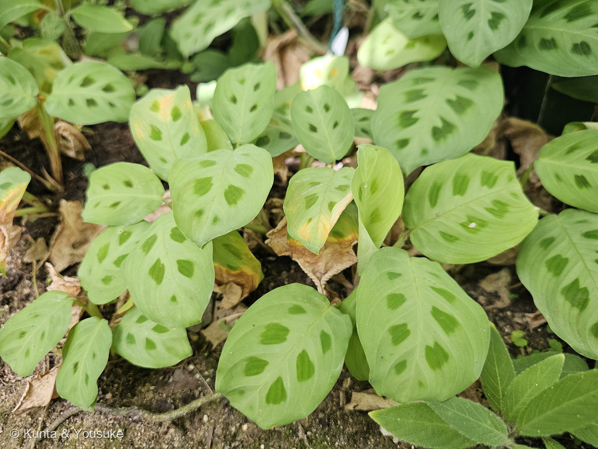
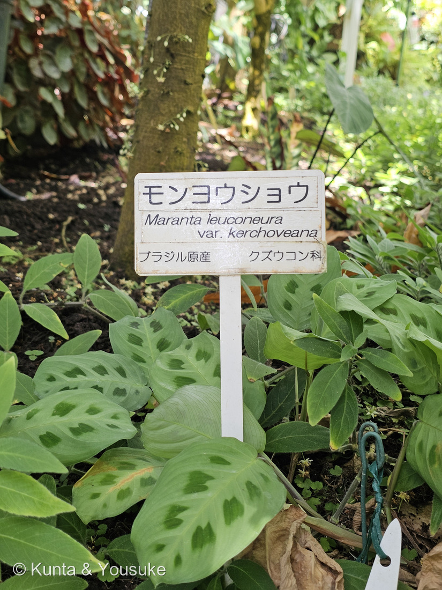
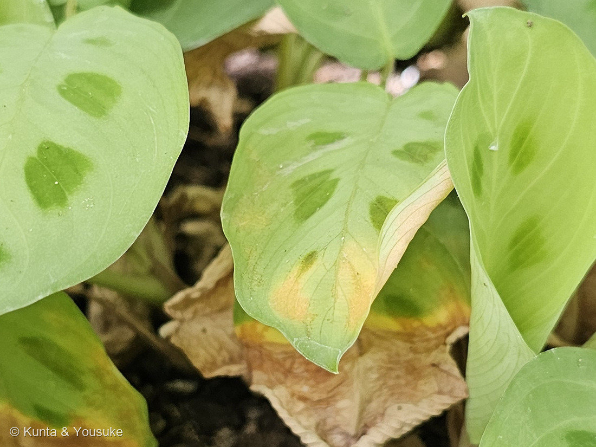
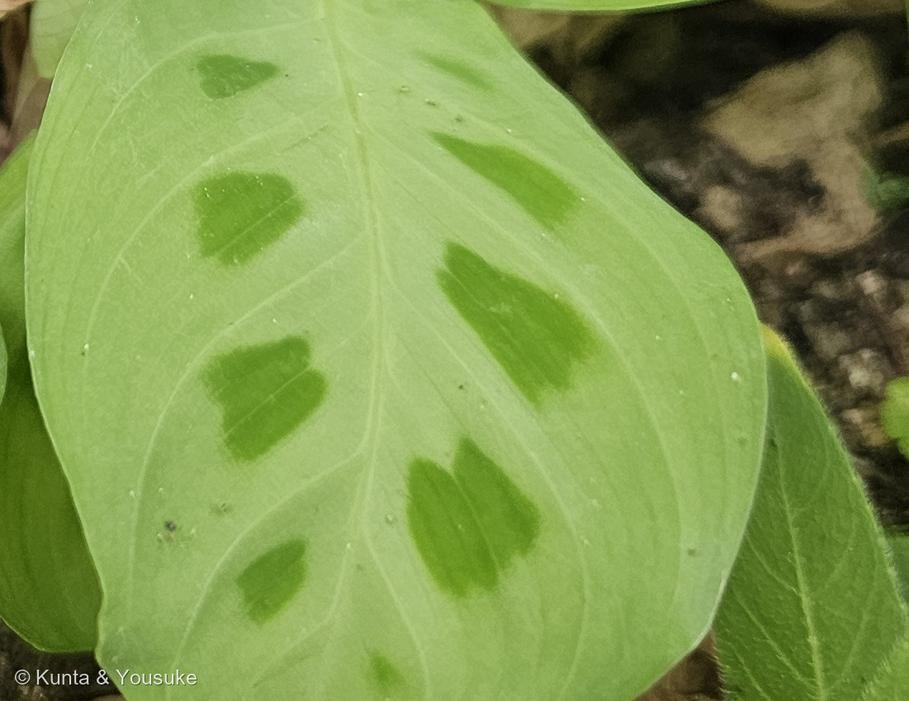

地図を読み込んでいるよ…
🔍 写真も地図も、押しているあいだ拡大して見られるよ（スマホは指を置いてすこし待ってね）。
🌍 の地図＝この子がもともと自生している場所を緑に。ブラジル原産（園の名札のとおり）。クズウコン科そのものは、オーストラリアをのぞく熱帯・亜熱帯に広く分布する。くわしくは下の地図の説明を見てね。
⭐ブラジルの子だよ。園の名札が「ブラジル原産」と書いていた。⚠⚠この緑はブラジル全体だけれど、ほんとうにいるのはその中の、熱帯の林のいちばん下（林床）だと思って見てね＝⭐高さ20cmくらいにしかならない、地面をおおう草だから。⭐⭐科としては、もっとずっと広い＝クズウコン科は30属400種ほどで、オーストラリアをのぞく熱帯・亜熱帯に分布する（日本語版Wikipedia）＝⭐アフリカにもアジアにも仲間がいるよ。⭐⭐⭐おまけのクズウコン（Maranta arundinacea）も熱帯アメリカ生まれ＝⚠でもこちらは「澱粉の材料として熱帯各地で栽培され」ていて、いまは世界の熱帯に広がっている＝⭐アロールートのふるさとが、この緑の中にある。⭐日本は塗っていない＝ぼくらが会ったのは大温室の中。⭐でも「マランタ」の名前で園芸店にふつうに売っているので、おうちでなら会えるよ。⭐⭐同じショウガ目の仲間の原産地とくらべてみて＝176 ミョウガは東アジア、262 ヘリコニアは熱帯アメリカ、254 タビビトノキはマダガスカル＝⭐ショウガ目は、熱帯じゅうに散らばっている目なんだね。
⚠ 地図は国（日本と中国だけ県・省）までしか塗れないから、ほんとうの分布より広く見えていることがあるよ。地図はだいたいの場所。正確なところは、上の文を見てね。
モンヨウショウ（紋様蕉）
Maranta leuconeura var. kerchoveana
別名 マランタ・ケルコウェアナ 英名 prayer plant（祈り草）· rabbit's foot（うさぎの足）· rabbit's tracks（うさぎの足あと）
クズウコン科 · Marantaceae（マランタ属 Maranta・ショウガ目 Zingiberales）── ⭐⭐図鑑で107科目！はじめてのクズウコン科／⭐でもショウガ目としては5科目だよ
燻太さんの言葉「特徴的な斑点は輪郭が少しぼやけているようなグラデーションで、筆で緑の絵の具をそっと乗せたような優しいタッチ。この模様、原産地でもそのままなのかな？ クズウコン科っていう分類も、初めてで馴染みがないけど、クズとウコンならみんな知っている名前だね。」── ⭐⭐2つの質問、どちらも答えがきれいに割れたよ
⭐⭐⭐⭐⭐ 燻太さんの質問① ── 「クズ」と「ウコン」、ほんとうに関係あるの？
- ⭐⭐⭐科の名前のもとになったのは、クズウコン（葛鬱金・Maranta arundinacea）という植物。──この子と同じマランタ属だよ。⭐日本語版Wikipediaは「澱粉の材料として熱帯各地で栽培され」とする。⭐そのデンプンが「アロールート」。
- ⭐⭐⭐⭐⭐さて、「クズ」と「ウコン」。──じつは、片方は血縁があって、片方はまったくの他人なんだ。
- ⚠クズ（葛）＝マメ科。⭐まったくの他人。⭐「根からデンプン（葛粉）がとれる」というところだけが同じ。
- ⭐⭐⭐ウコン（鬱金）＝ショウガ科。⭐⭐そしてショウガ科とクズウコン科は、どちらもショウガ目＝ほんとうに親戚なんだ。
- ⭐⭐⭐⭐しかも、そのショウガ科はもう図鑑にいる。──176 ミョウガ。⭐ウコンは、あのミョウガと同じ科だよ。
- ⭐⭐まとめると＝「クズウコン」という名前は、デンプンがとれるところをクズにたとえ、姿をウコンにたとえたもの。⭐そしてたとえた相手の片方（ウコン）とは、ほんとうに血がつながっていた。
⭐⭐⭐⭐⭐ 燻太さんの質問② ── この模様、原産地でもそのままなのかな？
- ⭐⭐⭐⭐⭐答えは「そのまま」。──⭐理由が、名前の中に書いてあるんだ。
- ⭐⭐⭐この子の名前は Maranta leuconeura var. kerchoveana。──この「var.」は変種（variety）のしるし。⭐⭐園芸品種（cultivar）なら 'Kerchoveana' のようにシングルクォートで囲んで書くんだ。
- ⭐⭐⭐⭐変種というのは、植物学者が「野生にある型」として記載したもの。⭐人が作り出した模様ではないんだよ。⭐名札も「ブラジル原産」と書いている。
- ⭐⭐⭐⭐⭐そして、燻太さんの写真そのものが、もう一つの証拠になっている。──⭐写真④を見てほしいな。
- ⭐⭐⭐斑が、でたらめに散っていない。──中肋（まんなかの太い脈）の両側に、2列。⭐しかも葉脈と葉脈のあいだに、1つずつ。⭐左右がちゃんと向かい合っている。
- ⭐⭐⭐⭐これは葉のつくりに組みこまれた模様だ、ということ。──⚠病気や傷でできた斑なら、こんなに規則正しくは並ばない。⭐葉が伸びるときの設計図に、はじめから入っているんだ。
- ⭐燻太さんの「筆で緑の絵の具をそっと乗せたような優しいタッチ」＝輪郭がぼやけたグラデーションも、そのとおり。⭐Weblioは「白緑色の地に暗緑色の斑紋が入ります」と書いているよ。
- ⚠ただし、正直に一つ。──「なぜその模様なのか」を説明した出典には、ぼくは当たれなかった。⭐熱帯雨林の林床は木漏れ日でまだらだから、という話も見かけるけれど、確かめられなかったので書かないでおくね。
⭐⭐⭐⭐⭐ この植物のこと ── 模様より、じつは「動く」ほうが本業
- ⭐⭐⭐⭐⭐この子の英名は prayer plant（祈り草）。──⭐なぜだと思う？
- ⭐⭐⭐日本語版Wikipediaは、クズウコン科をこう説明している。
「葉枕」と呼ばれる運動機構を持ち、「就眠運動を行う」ため「祈り草」と呼ばれる
- ⭐⭐⭐⭐つまり、夜になると葉が立ち上がって閉じる。⭐手を合わせて祈るような形になるんだ。⭐そして朝になると、また水平にひらく。
- ⭐⭐動かしているのは葉枕（ようちん）＝葉と葉柄の境目にある、関節のようなふくらみ。⭐そこの細胞が水を出し入れして、葉の角度を変えている。
- ⚠⚠ぼくらが見たのは、お昼の11時58分。──⭐写真の葉はぜんぶ水平にひらいている＝「昼の顔」しか見ていないんだ。⏳だから、いちばんの宿題は「夕方と朝に、同じ株を見にいく」ことにしたよ。
- ⭐⭐もう一つの英名が rabbit's tracks（うさぎの足あと）。──⭐写真④の斑のならびを見ると、なるほどと思う。⭐足あとが2列、点々と続いているみたいだね。
- 体のこと＝常緑の多年草で、高さ20cmくらいにしかならない。地下茎から短い茎を出し、その基部に葉をつける。葉は中心脈から両側に葉脈を分岐し、幅広い。夏に白い花を総状につける（日本語版Wikipedia・Weblio）。
- 科のこと＝クズウコン科は30属400種ほど。オーストラリアをのぞく熱帯・亜熱帯に分布。形態はカンナ科やショウガ科に似ている（日本語版Wikipedia）。⭐観葉植物のカラテアやストロマンテも、この科だよ。
⭐⭐⭐⭐ 図鑑での立ち位置 ── 107科目、でもショウガ目としては5科目
- ⭐⭐⭐⭐⭐クズウコン科は、図鑑ではじめて＝107科目。
- ⭐⭐⭐でもショウガ目としては、もう5つめの科なんだ。──⭐ショウガ目は、図鑑でいちばん科がそろっている目の一つだよ。
- バショウ科＝069 バナナ・070 チユウキンレン
- ゴクラクチョウカ科＝254 タビビトノキ
- オウムバナ科＝262 ヘリコニア
- ショウガ科＝176 ミョウガ（⭐ウコンと同じ科）
- クズウコン科＝この子
- ⭐⭐そして、和名にもその手がかりがあるかもしれない。──「紋様蕉」の「蕉」は、芭蕉（バショウ）の蕉。⭐バショウ科は、上のとおり同じショウガ目。⚠由来をはっきり書いた出典には当たれなかったので、字の意味から読んだだけだけどね（219 ハツミドリのときと同じ書きかた）。
同定について
- ⭐⭐園の名札に「モンヨウショウ／Maranta leuconeura var. kerchoveana／ブラジル原産 クズウコン科」とあり、その名札と株が同じ画面に写っている（写真②）。⭐だから変種まで書けるよ。
- ⭐写真の側の裏づけ＝①白緑色の地に暗緑色の斑紋 ②高さ20cmほどの低い草 ③地下茎から短い茎を出し、その基部に葉をつける形 ④葉は中心脈から両側に葉脈を分岐し、幅広い。
- ⭐⭐そのうえで、写真④の斑のならびかたは、出典に書かれた記述ではなく燻太さんの写真から読みとれたことだよ。
- ⭐この名札は、写真も解説文も無い短い札なので、そのまま公開している。──⚠すぐ15秒あとの291 コショウの解説板は、写真が3枚印刷されていたので切った。⭐同じ日・同じ温室でも、札ごとに判定はちがうんだ。
⭐⭐⭐ この2枚は、燻太さんの言葉から探しあてたもの
- ⚠⚠正直に書いておくね。──この2枚は、燻太さんが送ってくれたものじゃないんだ。
- ⭐⭐⭐手がかりは二つだけだった。──①「コショウを撮影する直前」 ②291 コショウの撮影時刻＝11:58:53。
- ⭐だからカメラロールの 11時57分〜58分を、12枚だけ並べて見た。⚠カメラロールはほとんどがクラウドの上にあるので、時間帯をうんと絞ってから開いたよ。
- ⭐⭐⭐11:58:38 に、燻太さんの言うとおりの「淡い緑の柔らかそうな葉」がいて、その6秒あとの 11:58:44 に名札が写っていた。⭐そして、その9秒あとがコショウ。
- ⭐⭐燻太さんの言葉の「直前」が、ほんとうに15秒だったんだね。
出典：広島市植物公園の名札（モンヨウショウ／Maranta leuconeura var. kerchoveana／ブラジル原産 クズウコン科）／日本語版Wikipedia「クズウコン科」（30属400種・クズウコン＝Maranta arundinacea・葉枕と就眠運動・祈り草）／Weblio辞書「紋様蕉」（白緑色の地に暗緑色の斑紋・高さ20cm・夏に白い花を総状に・英名）。